Overview
To say that 2020 has been a memorable year is an understatement. The COVID-19 pandemic has caused schools and businesses to close their doors forcing the 600,000 students in Los Angeles Unified School District to switch to online learning. Many students are left without important resources their school would normally provide that are imperative to a sustainable learning environment. The LAUSD website does address their COVID-19 response but it is limited and for a struggling child or parent it does not include a user friendly approach to the necessary resources needed for a successful remote learning environment.
Role
UX Research
UX Design
UI Design
Branding
User Testing
A/B Testing
Front
End Development
Duration
Two weeks
Team
Bonnie Ward
Omar Rehman
Brian Kim
Samantha Yee
The Problem
We have observed that the switch to online learning has caused parents to dedicate more time
than they have to their students education. Students are no longer receiving the social time they need to
develop emotionally, and have become less active. How might we improve the LAUSD so that parents and students
are successful based on less stress surrounding online learning and more well rounded schedules for kids and
parents?
Opportunities
Deep user empathy during stressful and sensitive times
Designing for vulnerable groups who
can benefit the most from design choices
UI suitable for children and families
New solutions for a very
relevant and persisting problem
Defeating the Pandemic Blues one household at a time

Originally, our team planned on redesigning the LAUSD website but after careful consideration we made the switch to redesigning the West Hollywood Elementary School website. Since we only had two weeks to research and design we wanted to design something on a more local level with a bigger impact. Doing a heuristic evaluation of the current website, there are not many helpful remote learning resources. The homepage is overwhelming with a few instructional troubleshooting PDF files for technology. The parent resource portal is simply an unpleasant graphic with no useful information. The branding is basic and the fun and creative elementary school like feel is missing. Two stars.
Proto Persona
Allow me to introduce you to Carolina Magaña, our proto persona! Carolina is a single mother living in Los Angeles who is struggling to balance her full time job and her child's education.
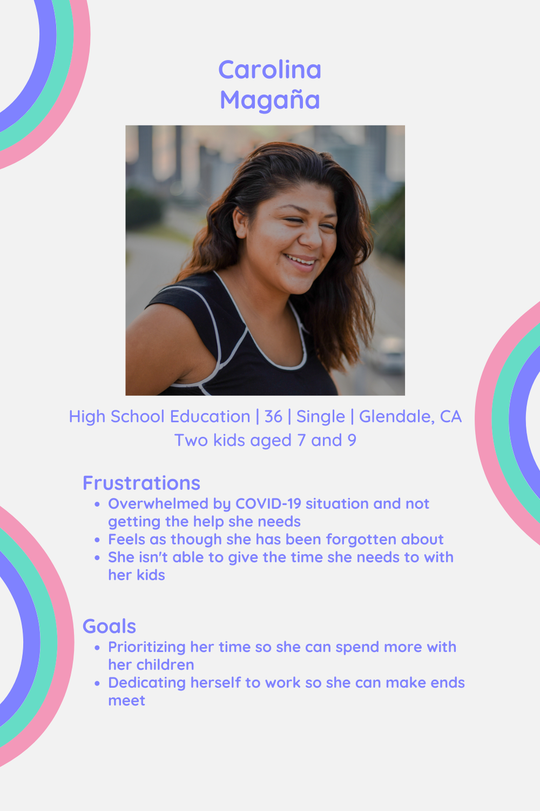User interviews
We began our user research with five user interviews from parents who we thought resembled Carolina and two stakeholder interviews from a behavioral therapist and a teacher. Our main goal of the interviews was to discover what resources parents and kids have that are working well for them, learn about their routines, and learn what they think are the biggest changes that need to take place in their child's school.
Listen to my interviews here.Our interview key takeaways advised us that Carolina had basically become a homeschool teacher and is concerned with the time and frustration she has to dedicate to her child's learning. Her biggest concern is her child's emotional wellbeing because they are not getting enough social time in the zoom classroom. We updated our user persona accordingly.
Empathy Map
We compiled our research findings into an Empathy Map to empathize with Carolina about the situation and how we can best define her problems in order to help. The Empathy Map allows us to develop a clear user persona.
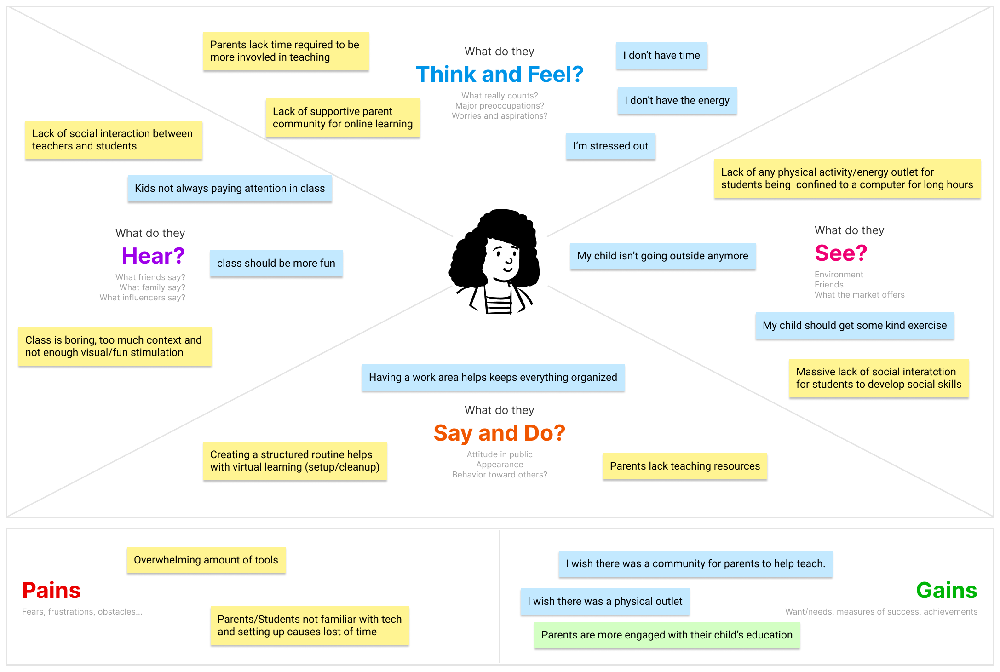User Persona
Based on our findings we discovered that Carolina is stressed but she is mostly concerned with her kids having more fun. On her end, she needs teaching resources from the school. She gets plenty of news updates and communicated with the school all of the time, however communicating with the teacher is a little more difficult and she is struggling to find teaching resources. She knows that everyone is doing their best during this time and is showing lots of motherly compassion rather than anger.
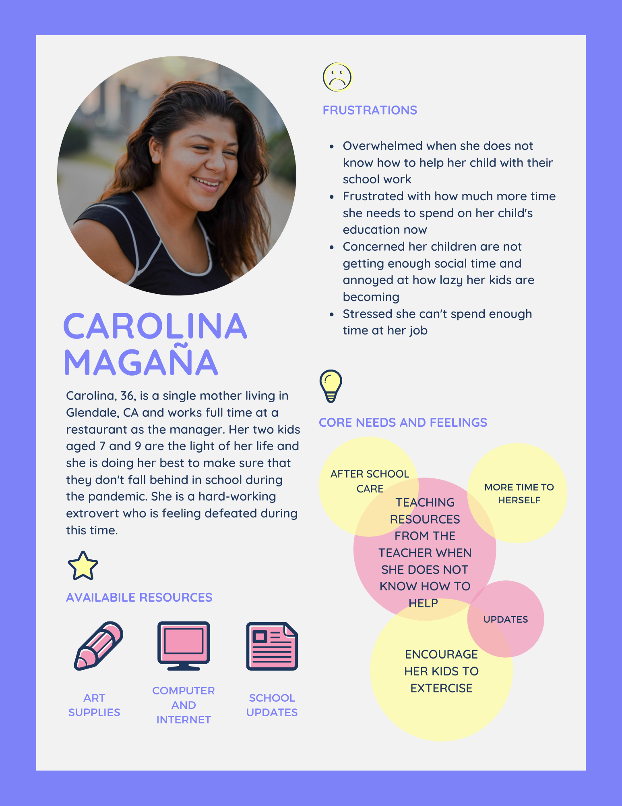User Insight Statement
During user interviews we discovered that students and parents are overwhelmed with the wide
range of multiple websites they have to use for online learning and the unorganized lesson planning. Parents are
struggling to keep their children engaged and they are having to invest hours of time in teaching their child.
Parents are frustrated because they are having to use external resources like YouTube and it causes
inconsistencies in the child's learning. Additionally, we discovered that children have become self
directed from online learning and are lacking social time with other kids and physical
exercise.
Therefore, we believe that the best way to help with the stresses of online learning is to
provide a fun and social space where kids can interact with each other and exercise and
organized teaching resources for parents.
Value Proposition
West Hollywood Elementary School is developing virtual after school activities to help provide students with a way to build social skills, get active, and have fun. Furthermore, we are developing a virtual learning hub to provide parents with the resources they need for a consistent learning environment, connecting with teachers, and easing frustrations. Our goal is to help parents and students build supportive communities to fulfill the unmet needs of virtual education.
User flow
Completing a User Flow was my job. I knew the flow needed to include the two main solutions we were creating for wellbeing resources for exercise and social time for the kids, and learning resources to help parents get in touch with teachers or teach their own kids.
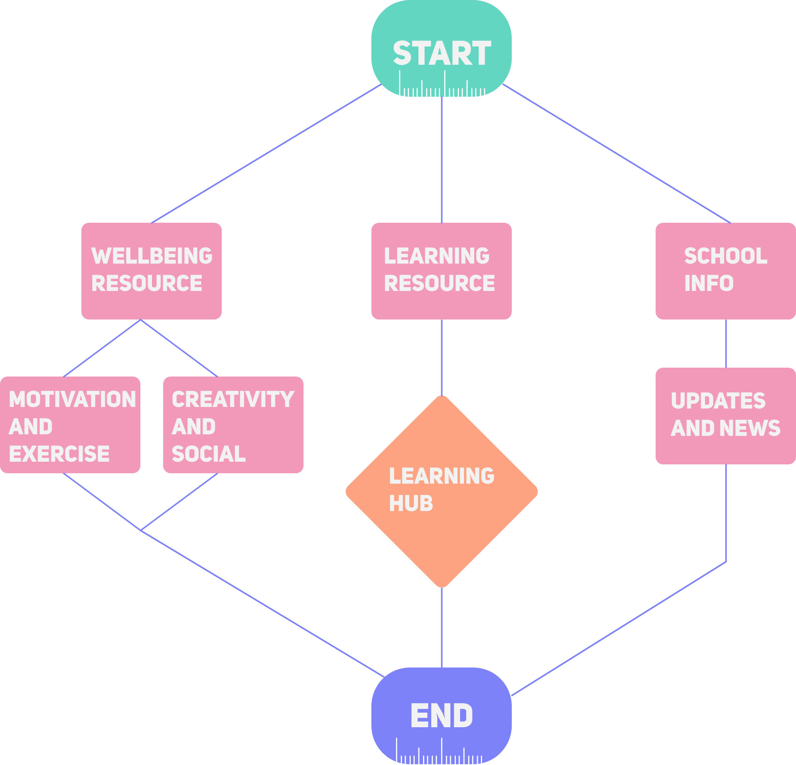Sitemap
As a self proclaimed Information Architecture Connoisseur I also built the sitemap. I wanted to keep things simple and structured the map for a visiting parent with a calendar, parent center, about center, and programs breakdown.
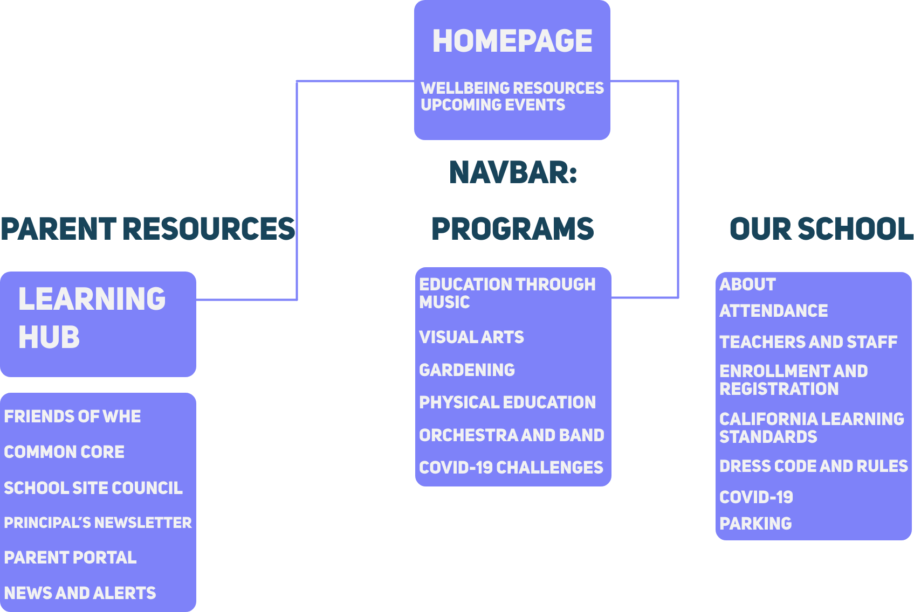Design Concept
From the define phase we knew which features we wanted to include, which pages we needed to build, and the information architecture for our site. I gathered inspiration from other kids related applications and websites to make things familiar and user friendly. For the Online Learning Hub for parents I wanted there to be clear button controls and something similar to a dashboard on an iPad app for parents and kids for familiarity. The Learning Hub also includes many micro interactions that provide positive feedback for parents and students to encourage users who have been frustrated for the past few months and feeling defeated. The Learning Hub was my main design focus but I also created a design solution for virtual after school care that requires no cost to parents or the school for an easy implementation. Our group collaborated by each creating a design solution and chose the one created.
View the clickable prototype here.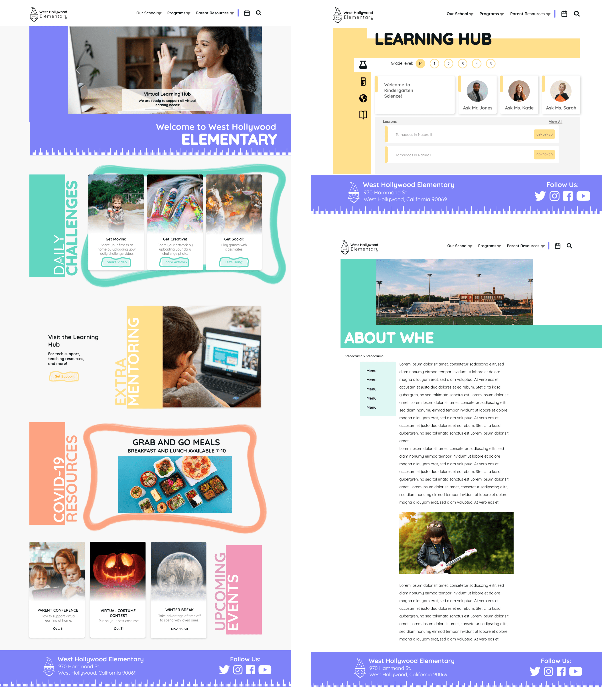UI Style Guide
I wanted to include clean, fun, and relatable UI components for kids. I gathered inspiration from iPad apps that kids are used to interacting with and I knew I needed to rely on large buttons and iconography, animations and micro-interactions, lots of whitespace, and an engaging and fun color palate. I kept these concepts in mind while designing the UI Style Guide.
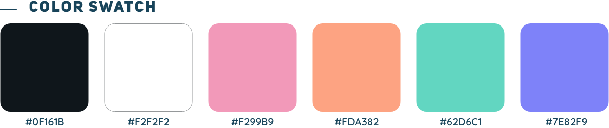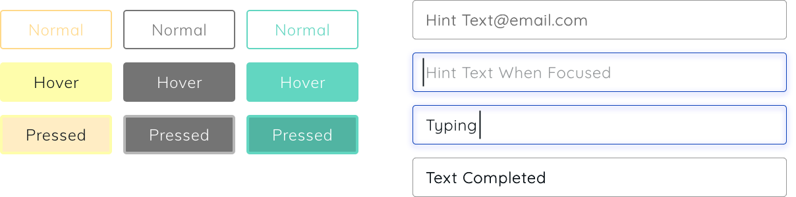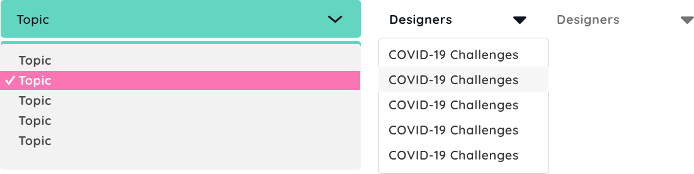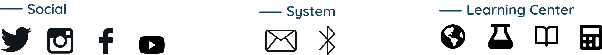User testing
We conducted a survey of 30 people to A/B test our new logo and homepage for feedback and also five guerrilla usability tests. Our feedback was to develop more clear Calls to Action with more concise wording than just "Learn More". We also learned that more whitespace would be beneficial. To our surprise, our design was a little too wordy so we confined and edited our copy.
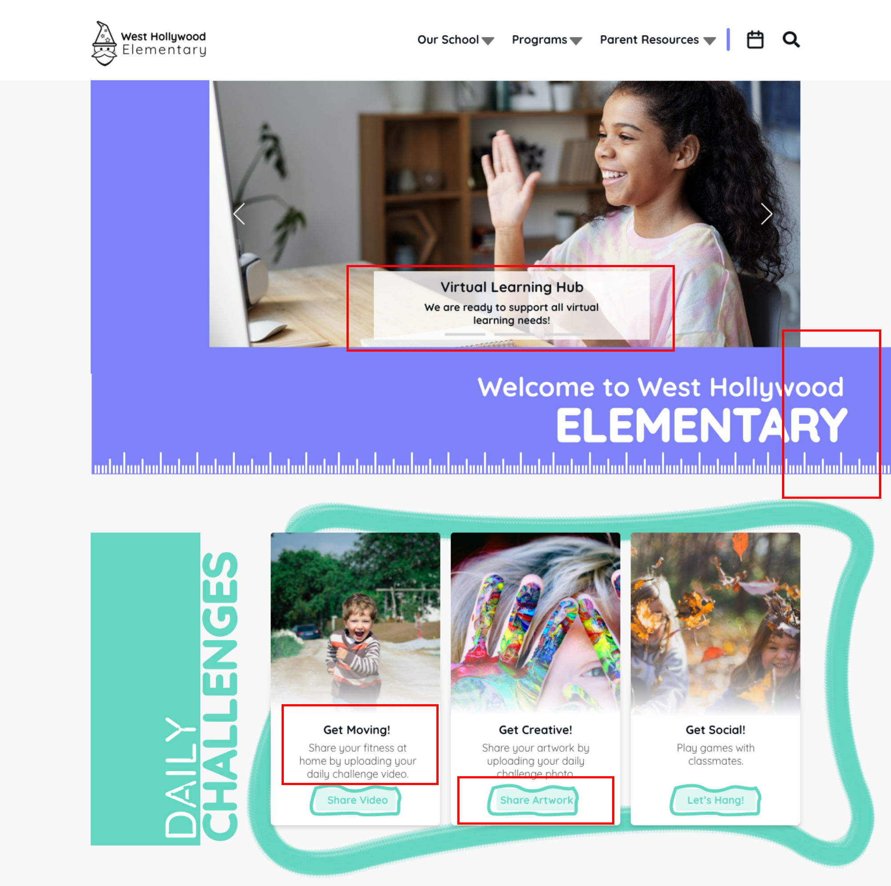Front End Coding
Our group finalized our design choice and style guide and we moved on to the front end development phase. We chose to use Bootstrap 4 while coding our design. This was my first time working with Bootstrap and we have a complicated relationship, but I had a great time learning how to work with it and customize it.
See the project here.Key Takeaways
My key takeaways from this project are that I really enjoy working with families and encouraging people to connect through design. I also learned Bootstrap 4 is a lot harder to work with than I thought. I am continuing to develop my methods for designing in a team environment and have a new appreciation for my teammates and their abilities.
Next Steps
Next steps for team BOBS (our initials) include contacting the school to see how they like our design! We would also love to do some further testing on the Learning Hub and see how we can improve it. Since video classrooms are a relatively new adoption we would love to spend more time researching them and see how we can implement a kid-friendly design to them.